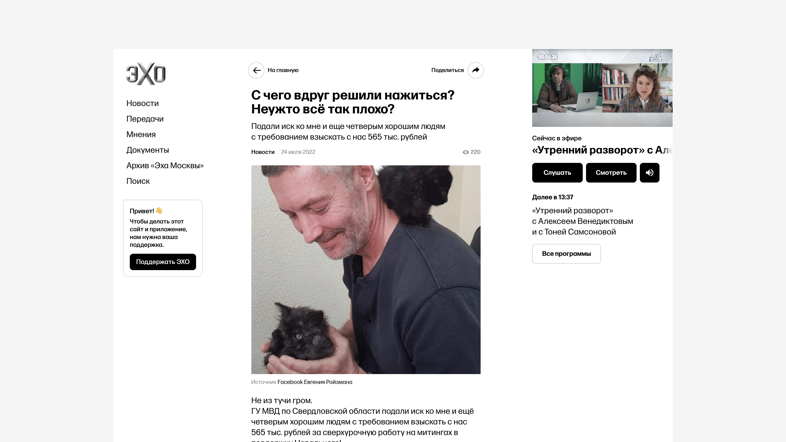
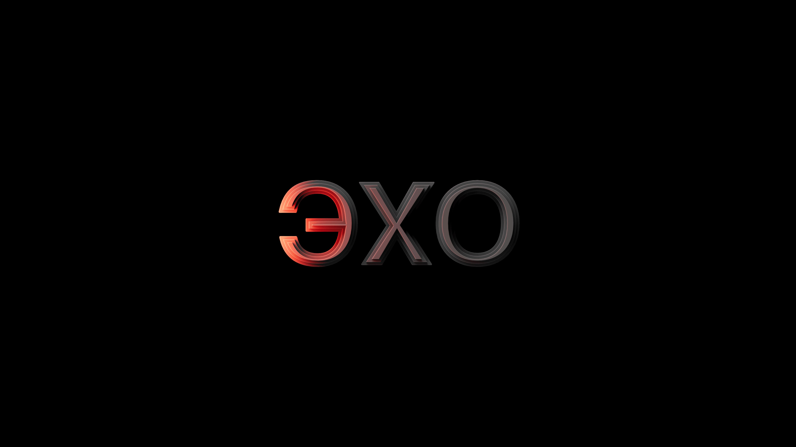
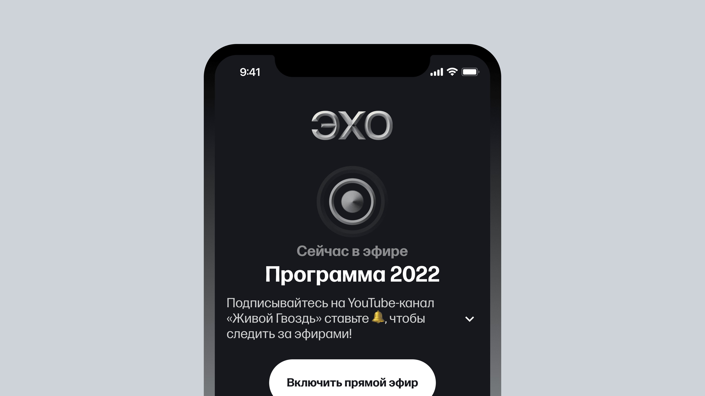

Echo Radio relaunch redesign
For 30 years Echo of Moscow was one of the most influential Russian radio stations until it was blocked by state authorities right after the war started.
(Orignial Echo logotype is above.)
The former team did a European relaunch and I was invited to do a brand redesign for the launch of an app, an online radio and a news site.
The updated sign emphasizes the range and variety of opinions — Echo does not have a black-and-white position.
The sign can be illuminated with a red live broadcast lamp.
I suggested FormaDJR font family as the basis of typography. Forma is a reference to magazine fonts of the 60s, brought back to life by David Johnatan Ross and Cyrillized by Jovana Jocić. The Cyrillic license was provided by Ilya Ruderman's Type Today dictionary. It seems to me that the set density, shape and contrast are ideal for media with such a news agenda.
The volume of the sign may vary.
Color palette.
Graphic elements.
logo within app interface.
Instructions on how to make avatars of authors and guests.
The logo stands out in the niche of similar projects and has its own bright character.
Sketches and WIP.
The grapheme "ECHO" is very graphic in itself. First I looked at how it could be developed in the form of a rhyming sign.
But it is clear that this approach looks very decorative and I needed to look for another way to emphasize the essence of the brand.
I found a way to convey the volume literally.

And add drama to the sign.
The sign turned out to be fresh and elegant.
This structure is so monumental I realised that the geometry yet had to be changed paying an hommage to the old logo.
I made an alternative version with a reference to the past sign of the "Echo of Moscow" and refined the geometry.
Done.
Credits |
|
| Head of Project | Maxim Kournikov |
| Product Manager | Tonia Samsonova |
| Producer | Haya Goldfinger |
| Product Design | Alexey Grigoriev |
| Brand Design | Anton Prokopev |